Conceptual Art
In conceptual art the idea or concept is the most important aspect of the work. [...] It means that all the planning and decisions are made beforehand and the execution is a perfunctory affair. The idea becomes the machine that makes the art.
Sol LeWitt "Paragraphs on Conceptual Art" ARTFORUM 1967
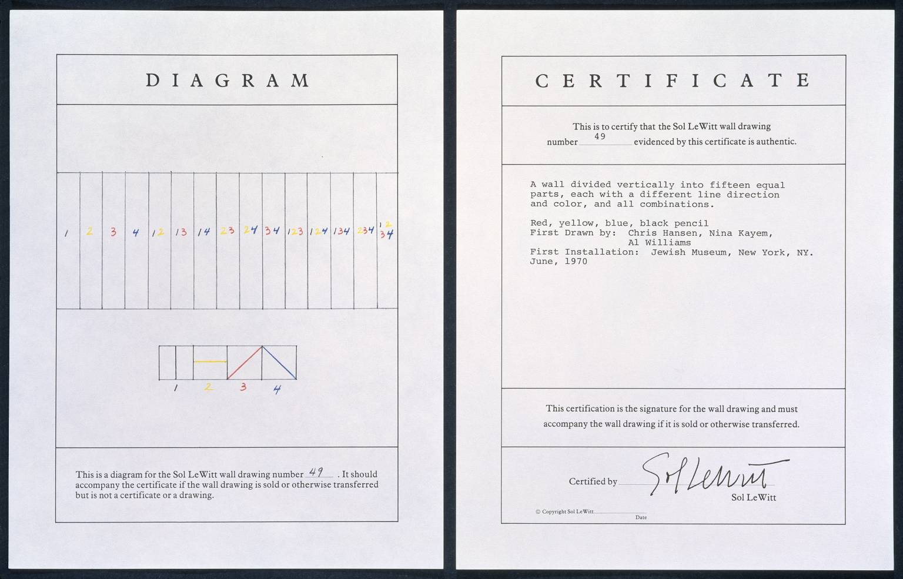
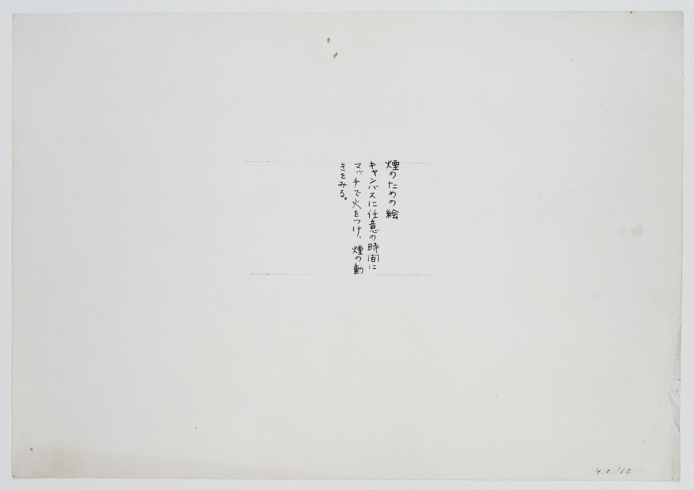
While LeWitt is one of the most well known artist to present instructions as art, there were many artists making similar work at the time, including some who made instructions that weren't ever really intended to be produced, like Yoko Ono. The piece above comes from the series "Instructions for Paintings" 1961/1962 consisted of 22 instructions, translated it reads “Painting for Smoke. At any chosen time, light a match on the canvas and watch the movement of the smoke.” Below are three more of her instruction pieces, mean to be contemplated more so than created.
Computer Art
Before the era of personal computers (~1980s) only individuals working at companies or universities who had access to these large and expensive machines. The first artists to start working with computers usually gained access to them by working with these companies or computer science labs at universities. Like Lillian Schwartz, for example, who worked as an artist in residence at Bell Labs starting in 1969, a pioneering computer research lab.
Art, Technology and "Generative Systems"
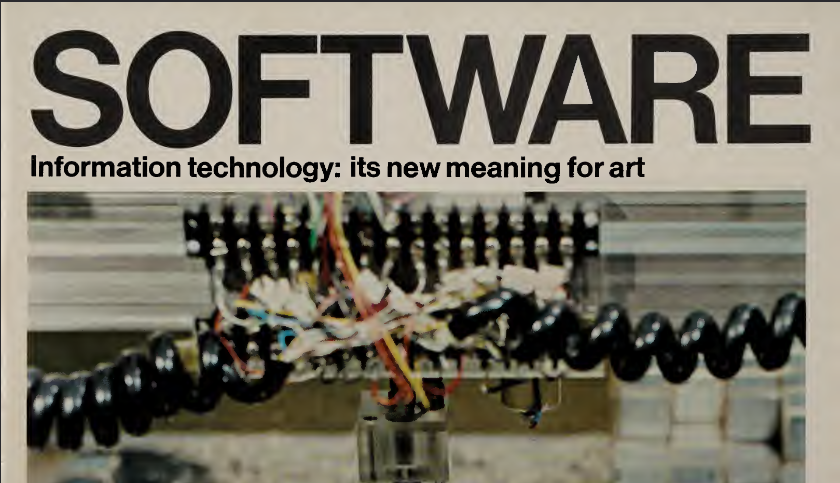
The image above is from the cover of the exhibition catalog for "Software, Information Technology: Its New Meaning for Art" curated by Jack Burnham at the Jewish Museum in New York in 1970. You can view a pdf of the full program here (missing pages) or a color version here (includes all the pages, some are nsfw) it's definitely worth a look through.
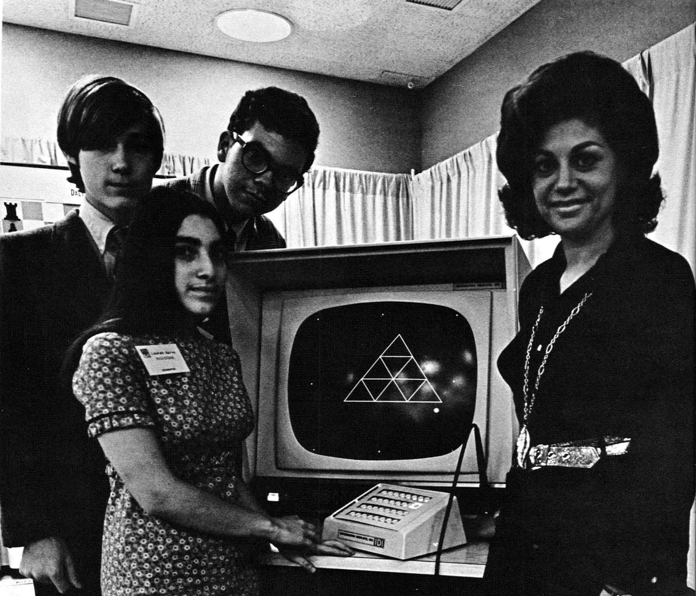
The show drew connections and arranged collaborations between technologists and conceptual artists. For exmpale, pictured here are three members of the R.E.S.I.S.T.O.R.S. (Radically Emphatic Students Interested in Science, Technology and Other Research Studies) a rare/early "computer club" of middle and high school students with conceptual artist Agnes Denes. Pictured here are Peter Eichenberger, Lauren Sarno, John Levine (not present: Nat Kuhn).
The exhibition included early examples of the sorts of work we'll be creating in this class, visual algorithmic compositions, like "Matrix of Knowledge" and "Trigonal Ballet" featured above, as well as musical algorithmic compositions like "the Composer" by Allen Razdow and Paul Conly (Art & Technology, Inc, Boston) an early music synthesizer (the ARP) connected to an early computer (PDP-8) which was programmed to create random musical compositions the audience could "contribute ideas to" by "directly changing the computer program using electro-mechanical devices in front of four seats in the gallery".
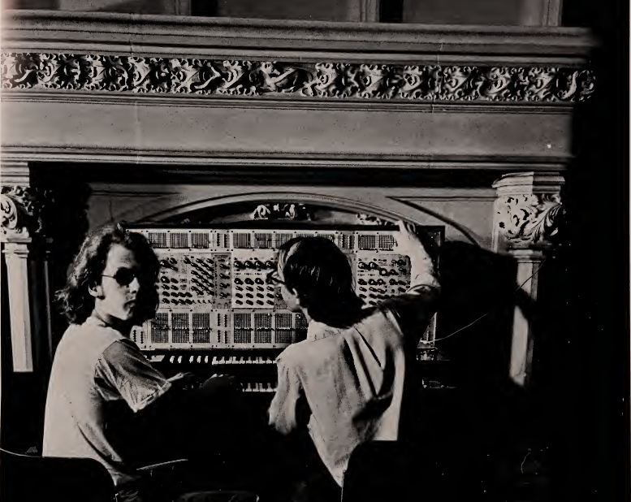
The exhibition included algorithmic works with less conventional modes of output like the haptic feedback in Linda Berris's "Tactile Film", the "first motion picture created to be felt as well as seen and heard" designed to be played back through the Vision Subsituttion System (seen here from the front and from the back).
The exhibition also included a number of algorithmic text-based works, like "Labyrinth", an interactive version of the exhibition catalogue by Ted Nelson, which was also one of the first "hypertext" systems to be created. Another example is, "The Boolean Image/Conceptual Typewriter"...
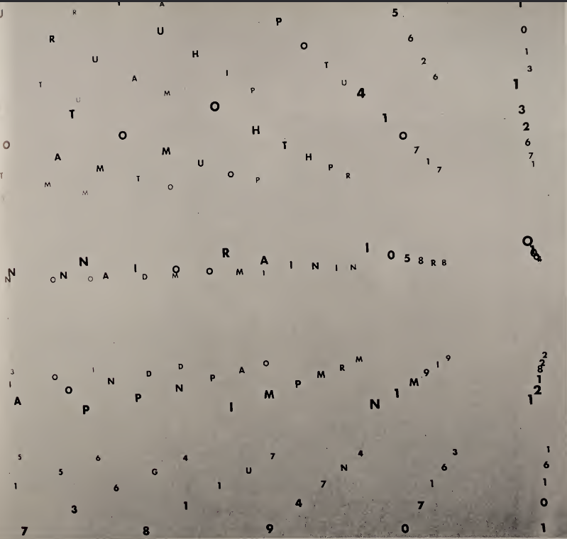
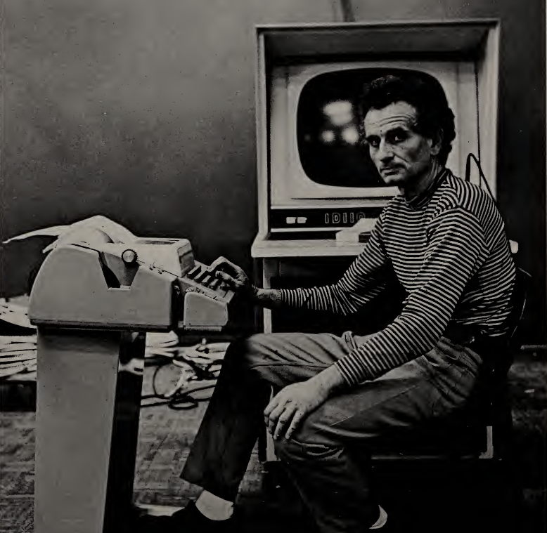
Originally produced for the exhibition in 1970 by Carl Fernbach-Flarsheim, the piece is composed by a program called 'Conceptual Typewriter' which is used to generate random spatial outputs of letters and numbers. Here's a modern version I created on netnet (here's the code) based on another version created in processing by the poet and programmer Allison Parrish
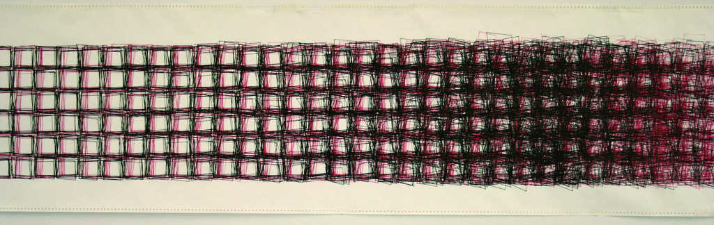
The artists working with computers to create systems for generating creative output did not refer to their practice as "generative art", they used a myriad of other labels like "generative systems" or broader terminology like "machine art" and "computer art", but by the late 60s and early 70s all the core principles of generative art were in play. A central theme, which we'll explore for homework this week, is "randomness", one of the artist who best known for exploring the creative potential of computer randomness is Vera Molnár.
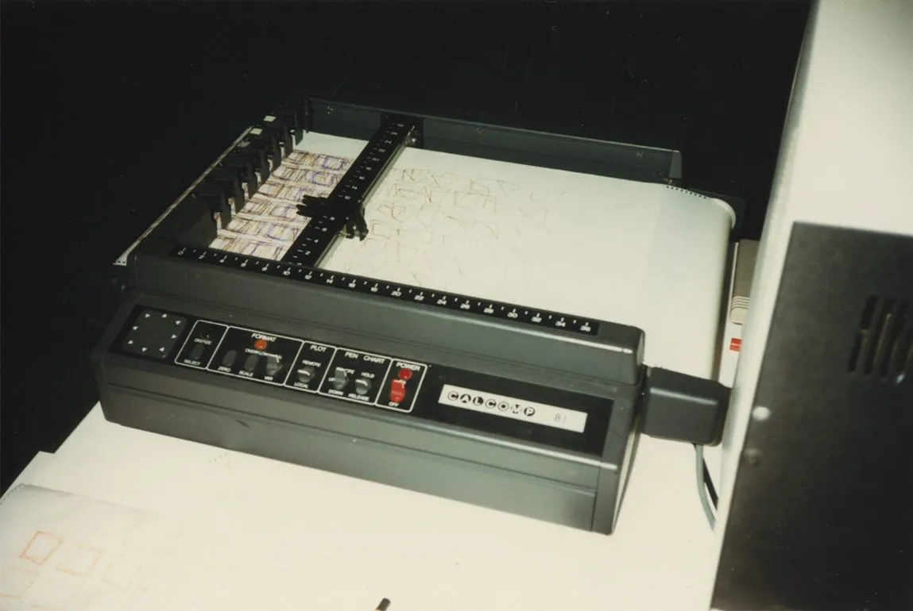
It's worth noting, that while today we typically experience Molnár's work on screens (as is the case with most contemporary generative art, including the works we'll create in this class), her work was usually rendered onto paper using devices like pen plotters.
Pen plotters are still a very popular tool among contemporary generative artists, like this piece, Handwriting Spiral 2 by Amy Goodchild, who created a generative system for producing what she calls "meaningful nonsense" in her own handwriting. But remember, we shouldn't confuse the print itself as the only "art object" here, as Goodchild notes in her online store "While similar pieces may be created (from the same JavaScript code) in the future, no two will be exactly alike, and the same generated image will not be plotted twice."
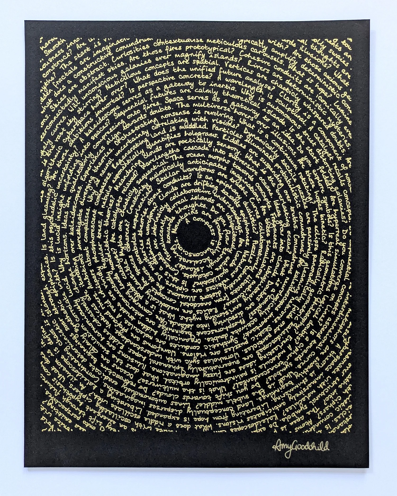
so, to recap...
Generative Art Today
Today the term "generative art" is pretty well established and while the computer and code are often at the center of these generative systems, as an art practice it extends into various other disciplines and domains, including Fashion (check out the piece D.dress by Mary Huang), Dance (check out this collab between Google Creative Lab and Bill T. Jones), architecture (check out the work of Zaha Hadid) and even bio art (check out the work of Neri Oxman). In 2024 there was even a generative film by Gary Hustwit about the influential generative artist/musician Brian Eno.
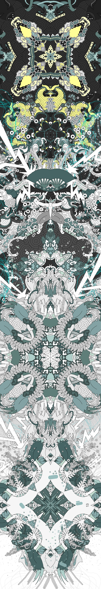
Generative art doesn’t have to be digital (we’ll reference historical examples of pre-generative art analog systems throughout the quarter) but they are most often created with the aid of computers today. Sometimes this is accomplished using graphical software with “node based” programming tools, like Rhino/Grasshopper (popular with generative or “parametric” architects) or Max (popular with generative musicians) or Touch Designer (popular with installation artists and VJs). But likely the most traditional approach is using computer code. There have been a number of programming languages used by generative artists including Java (usually with the creative coding framework Processing) or C++ (usually with the creative coding framework Open Frameworks), but today arguably the most commonly used programming language for creating generative art, especially online, is JavaScript. There are a number of frameworks and libraries in this space which we’ll be exploring this quarter, as our focus will be to produce gernative art online.